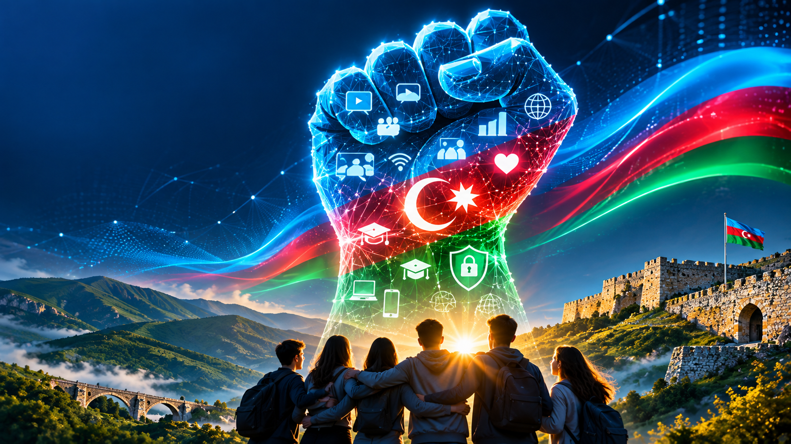
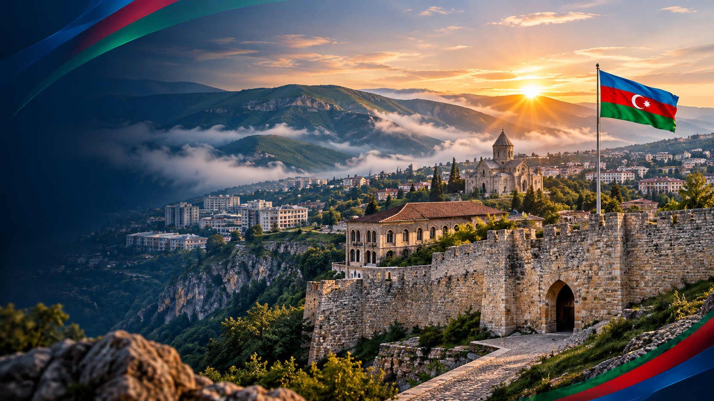

Sosial media, informasiya təhlükəsizliyi və gənclərin rolu
Rəqəmsal dünya:
birlik, məsuliyyət, həqiqət
Sosial media cəmiyyətin güzgüsüdür. Hər paylaşımımız yalnız ekranı deyil, ətrafımızdakı insanları və gələcəyimizi də formalaşdırır.
Sosial şəbəkə — cəmiyyətin güzgüsüdür
Rəqəmsal məkanda davranışımız şəxsi seçim olmaqla yanaşı, cəmiyyətin informasiya mədəniyyətinə də təsir edir.
Özümüzü göstəririk
Paylaşımlarımız bilik, dəyər, ünsiyyət mədəniyyəti və məsuliyyətimizi əks etdirir.
Başqalarına təsir edirik
Bir məlumatın paylaşılması onu yeni auditoriyalara çatdırır və qərarlara təsir edə bilər.
Rəqəmsal iz qoyuruq
Bu gün yazdığımız şərh və paylaşım sabah təhsil, iş və şəxsi reputasiyamıza təsir edə bilər.
“Dəmir yumruq” — birlik və həmrəylik mesajı
Birlikdə güclüyük: fərqli bacarıqlar, vahid məsuliyyət və ortaq dəyərlər.
Rəqəmsal mühitdə bu nə deməkdir?
Gənclərin ayrı-ayrı paylaşımları vahid məqsədə xidmət edir: həqiqəti qorumaq, faydalı bilik yaymaq, bir-birinə dəstək olmaq və Azərbaycanı layiqincə təmsil etmək.
Qeyd: “Dəmir yumruq” burada milli birlik və həmrəylik rəmzi kimi, qeyri-zorakı və maarifləndirici məna daşıyır.

Azərbaycanın rəqəmsal mühiti rəqəmlərlə
Mənbə: DataReportal, Digital 2027: Azerbaijan, dərc: 05.11.2026; göstəricilər 2026-cı ilin oktyabrına aiddir. “İstifadəçi identifikatoru” unikal insan demək deyil.
Platforma göstəriciləri — müqayisəli diaqram
Azərbaycanda 2026-cı ilin sonuna aid seçilmiş reklam/üzv auditoriyası göstəriciləri.
Mənbə: DataReportal, Digital 2027: Azerbaijan. *LinkedIn göstəricisi qeydiyyatdan keçmiş üzvlərdir; digər platformaların reklam əhatəsi ilə birbaşa müqayisə edilə bilməz. TikTok göstəricisi reklam alətlərində göstərilən 18+ auditoriyadır. Bu rəqəmlər unikal aktiv istifadəçi sayı deyil.
Hansı sosial şəbəkə daha yaxşıdır?
MDU tələbələri üçün tövsiyə edilən əsas kombinasiya
Instagram + YouTube + LinkedIn
Instagram — vizual təqdimat; YouTube — dərin bilik; LinkedIn — karyera və elmi əlaqələr.
| Məqsəd | Tövsiyə olunan platforma | Nə üçün? |
|---|---|---|
| Şəxsi brend və vizual hekayə | Reels, foto, karusel və portfolio | |
| Qısa maarifləndirici video | TikTok | Qısa format, sürətli kəşf imkanları |
| Elmi video və təlim | YouTube | Uzunmüddətli, axtarıla bilən məzmun |
| Karyera və akademik şəbəkə | Peşəkar profil və beynəlxalq əlaqə | |
| İcma və tədbir | Qruplar, tədbirlər, icma paylaşımı | |
| Koordinasiya və gündəlik əlaqə | Telegram / WhatsApp | Qrup, kanal və operativ ünsiyyət |
Hər platformanın öz dili var
Foto, Reels, karusel, şəxsi brend və vizual hekayə.
TikTok
Qısa video, yaradıcı izah və maarifləndirici çağırış.
YouTube
Təlim, müsahibə, sənədli film və uzun format.
İcma, universitet qrupu və tədbir məlumatı.
Karyera, tədqiqat, layihə və peşəkar əlaqələr.
X
Operativ fikir, ekspert rəyi və ictimai müzakirə.
Telegram
Kanal, qrup, xəbər və layihə koordinasiyası.
Şəxsi ünsiyyət, komanda işi və operativ əlaqə.
Bir paylaşımın təsir zənciri
Foto, video, şərh və ya xəbər yayımlayırsan.
İnsanlar məlumatı oxuyur, izləyir və şərh edir.
Paylaşım münasibətə, qərara və davranışa təsir edir.
Məlumat başqalarına ötürülür və cəmiyyətə təsir göstərir.
Müsbət təsir
Maarifləndirmə, həmrəylik, bilik, dəstək, faydalı təşəbbüs.
Mənfi təsir
Dezinformasiya, təhqir, kiberzorakılıq, panika, etimadsızlıq.
Özünə sual ver
“Bu paylaşım kimə və necə təsir edə bilər?”
Sosial şəbəkədə necə davranmalıyıq?
Hörmətlə danış
Fərqli fikirə görə insanı alçaltma, təhqir və nifrət nitqindən uzaq dur.
Faktla danış
İddianı mənbə ilə dəstəklə, şayiəni xəbər kimi təqdim etmə.
Məxfiliyi qoru
Başqasının fotosunu, yazışmasını və şəxsi məlumatını icazəsiz paylaşma.
Müəllifə hörmət et
Şəkil, musiqi, mətn və videonun müəllifini göstər; icazə şərtlərinə əməl et.
Emosiyanı idarə et
Qəzəbli olduğun anda dərhal cavab yazma; dayan, düşün, sonra paylaş.
İctimai təsiri düşün
Paylaşımın insanlara, universitetə və ölkənin imicinə təsirini nəzərə al.
Gənclər üçün 8 qızıl qayda
Dezinformasiya: görünən hər şey həqiqət deyil
Deepfake
Süni intellektlə yaradılmış və ya dəyişdirilmiş üz, səs və video.
Saxta xəbər
Yanlış məlumatın xəbər və ya rəsmi açıqlama kimi təqdim olunması.
Köhnə görüntü
Əvvəlki tarixli foto və videonun yeni hadisə kimi paylaşılması.
Saxta profil
Başqasının adından çıxış edən və etibar qazanmağa çalışan hesab.
Emosional manipulyasiya
Qəzəb və qorxu yaradaraq düşünmədən paylaşmağa sövq edən məzmun.
Kontekstin itməsi
Həqiqi görüntünün yanlış başlıq və izahla təqdim edilməsi.
Paylaşmazdan əvvəl 5 addım
İlk kim yayıb? Rəsmi və ilkin mənbə varmı?
Görüntü nə vaxt və harada çəkilib?
Başqa etibarlı mənbələr də eyni faktı bildirirmi?
Şəkil və video montaj, kontekst və AI baxımından yoxlanılıbmı?
05 · Qərar ver
Əmin deyilsənsə, paylaşma. Şübhəni dəqiq fakt kimi təqdim etmə.
Rəqəmsal hesabını qoru
Unikal parol
Hər hesab üçün ayrıca, uzun parol seç.
2FA / Passkey
İki mərhələli təsdiqi aktiv et.
Linki yoxla
Saxta giriş səhifələrindən uzaq dur.
Məxfilik
Profil və paylaşım icazələrini tənzimlə.

Bu günün paylaşımı — gələcəyin reputasiyası
Rəqəmsal iz nədir?
İnternetdə qoyduğumuz paylaşım, şərh, foto, video, bəyənmə və ictimai fəaliyyətlərin izi.
Gənc nə etməlidir?
Profilini peşəkar və təhlükəsiz saxla; layihələrini, biliklərini və nailiyyətlərini paylaş; emosional mübahisələrdən uzaq dur.
Qarabağ haqqında rəqəmsal hekayəni gənclər yaratsın
“Qarabağ — 60 saniyədə”
Yoxlanılmış bir faktı qısa video ilə izah et.
Rəqəmsal xəritə
Tarixi və mədəni obyektləri mənbə ilə təqdim et.
Alimlərlə söhbət
Tarixçi, tədqiqatçı və gənclərlə müsahibə hazırla.
Çoxdilli kontent
Azərbaycan, ingilis, türk və slavyan dillərində subtitrlər.
Fakt-yoxlama qrupu
Hər paylaşımın mənbə və kontekstini yoxla.
Təsiri ölç
Baxışdan əlavə, keyfiyyət, paylaşım və auditoriya reaksiyasını qiymətləndir.
Bir paylaşım gördün. Nə edəcəksən?
Mənbəyi göstərilməyən, emosional başlıqlı bir video sosial şəbəkədə sürətlə yayılır.
Birlikdə güclüyük.
Rəqəmsalda da birik!
“Dəmir yumruq” — birlik və həmrəylik rəmzi. Rəqəmsal məkanda isə bu birlik bilik, həqiqət, hörmət və məsuliyyətlə ifadə olunur.
HƏR PAYLAŞIMIN TƏSİRİNİ DÜŞÜN.
HƏQİQƏTİ QORU. MƏSULİYYƏTLƏ PAYLAŞ.
BİRLİKDƏ GÜCLÜ RƏQƏMSAL CƏMİYYƏT QUR!
Forumun proqramı və araşdırma mənbələri
Məruzəçi
Nərmin Əhmədova
Mingəçevir Dövlət Universiteti
Tarix
26.11.2026-cı il
Azərbaycan–Slavyan Gənclərinin I Qarabağ Forumu
Statistik mənbə
DataReportal — Digital 2027: Azerbaijan (dərc: 5 noyabr 2026; göstəricilər: oktyabr 2026).
Metodoloji qeyd
Sosial media identifikatorları unikal insan sayı deyil. Platforma reklam auditoriyası aktiv istifadəçi sayı ilə eyni deyil. LinkedIn qeydiyyatdan keçmiş üzvləri göstərir.